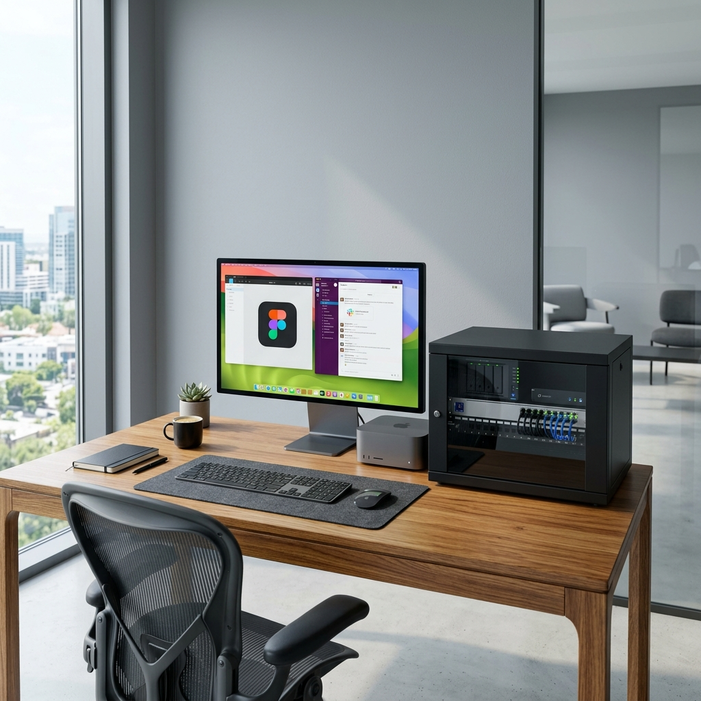
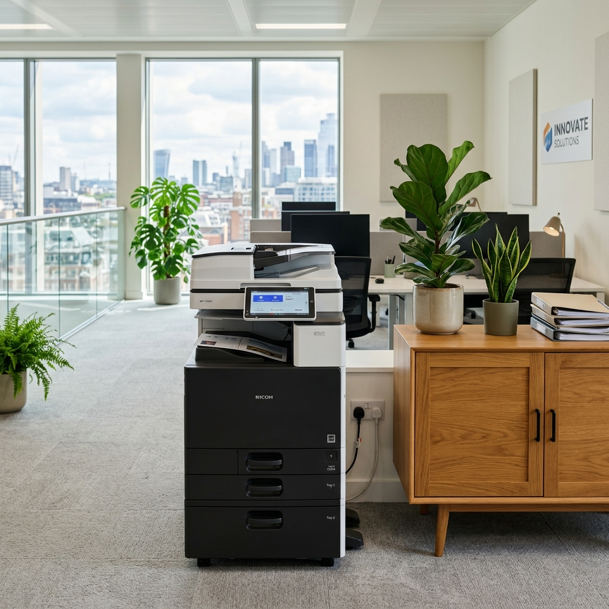
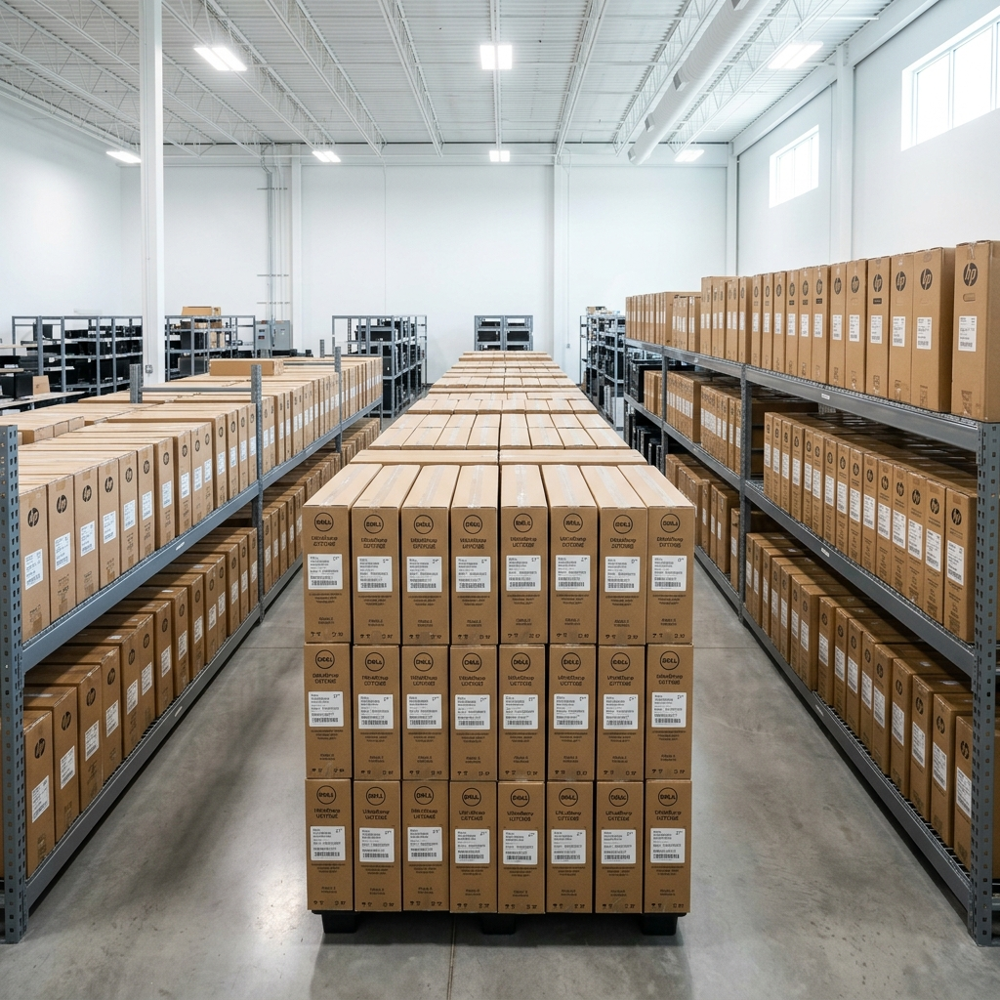

체계화된 모니터링과 숙련된 엔지니어 진단을 기반으로 기업의 핵심 업무 시스템 장비(PC, 사무 기기, 서버)를 완벽히 유지·관리합니다.

초고속 고화질 디지털 복합기 라인업을 합리적인 요금으로 렌탈하고, 토너 등 소모품 보충부터 원격 관리까지 완벽하게 케어해 드립니다.

공공기관, 관공서, 학교 및 대규모 사옥의 전산 기기(PC, 노트북, 모니터)를 규정과 절차에 맞춰 대량으로 납품 및 안전하게 교체해 드립니다.